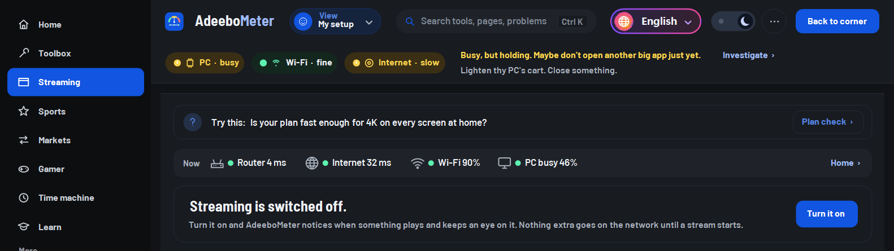

Why did it buffer?
Netflix, YouTube, Prime, Twitch, Crunchyroll, IPTV players - when something plays, in an app or a browser, AdeeboMeter notices and keeps an eye on it. When the picture drops, it tells you whose fault it was.

It notices by itself
By the servers' names Windows already knows - never your tabs, titles or what you watch inside a service. Not listed? Tell it in one line.
Whose fault, every dip
Your PC too busy, your Wi-Fi, your home network, your provider, or the stream's own server - with the evidence beside each one.
90 days of records
Every stream kept on your PC: when it dipped, how long, and why. A grid shows the hours your streams suffer most.
Can I stream 4K right now?
One button: SD, HD, Full HD and 4K - safe, risky or no, judged on a real speed test and your Wi-Fi.
Ready for your provider
Dates, times and the evidence, copied in one click for a chat or an email with your provider.
Learn why
Short lessons and games: how streams adapt, what a CDN is, and how to tell your Wi-Fi from your provider.
Replay the dip
Each buffering dip has a Replay link: the Time machine opens at that minute so you see what changed on your side and beyond.
Your end, always on top
A NOW line on the Streaming page: router, internet, Wi-Fi and how busy your PC is, live, with Home one click away.
The Streaming page in the full window
Off until you turn it on. Then it notices what plays and keeps an eye on it.

It never sees what you watch. It times a tiny connection to the stream's server (no data) every 10 seconds while something plays - and stops trying after six misses if the server ignores it.
Also: AdeeboMeter for trading · AdeeboMeter for gaming · Privacy
AdeeboMeter for Windows · no account, no cloud, no telemetry · runs without admin rights